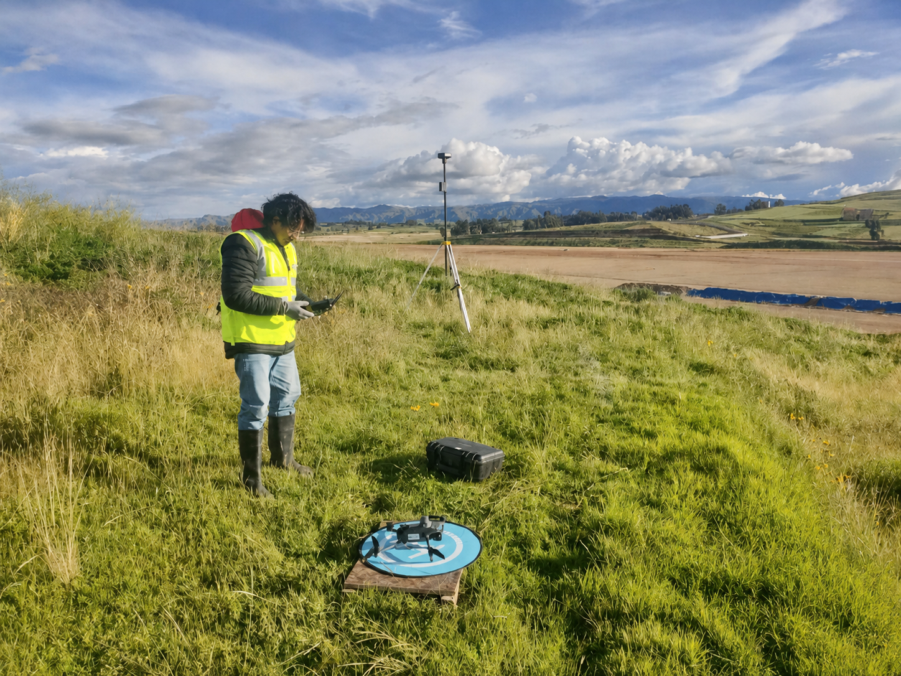
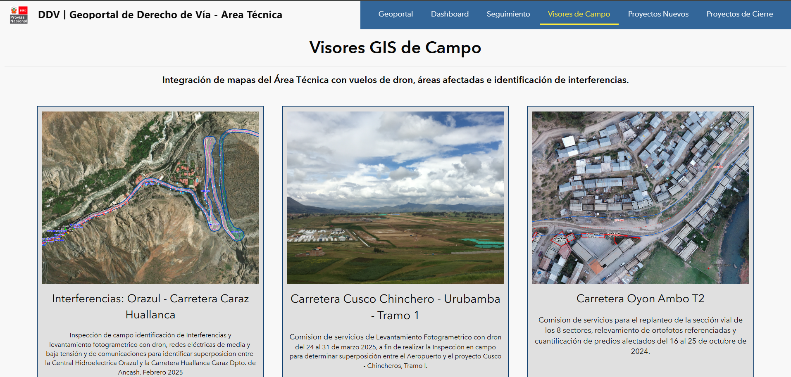
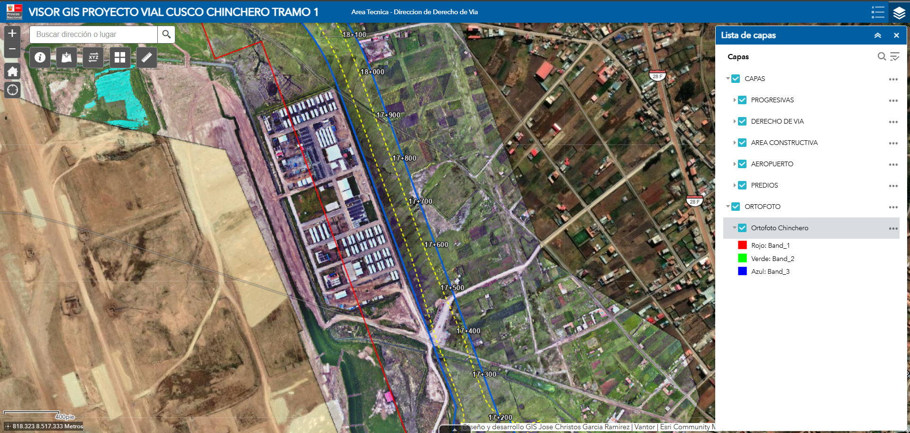
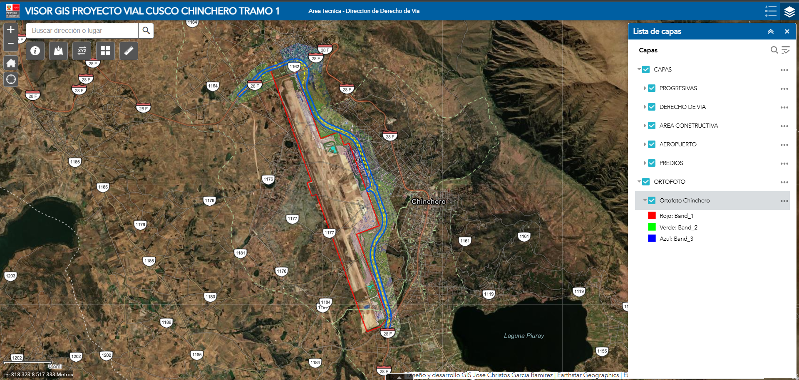
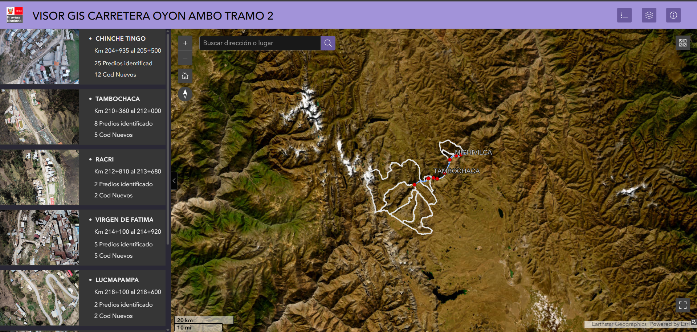
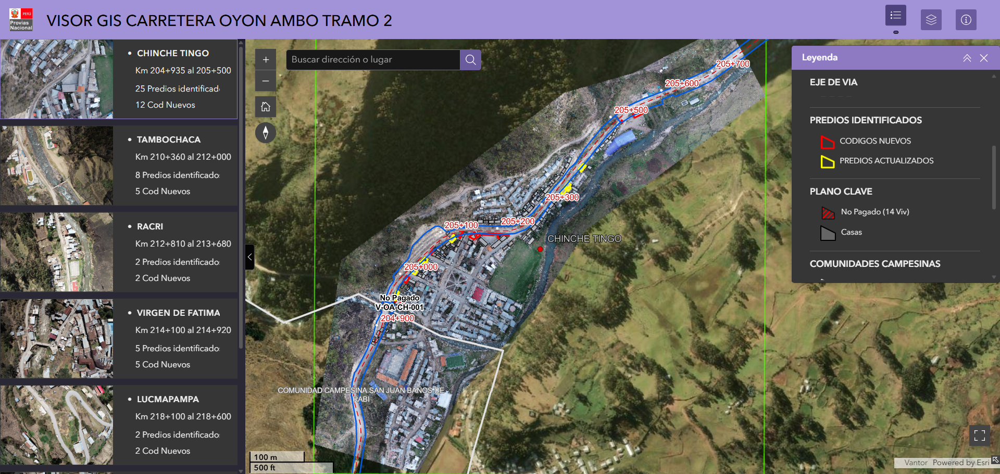
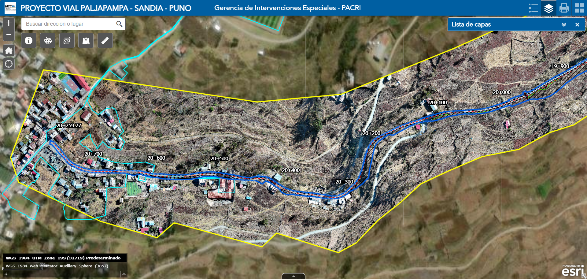
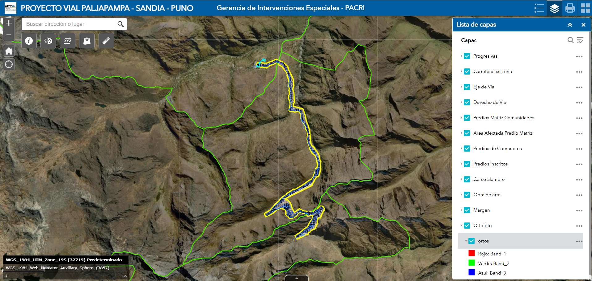
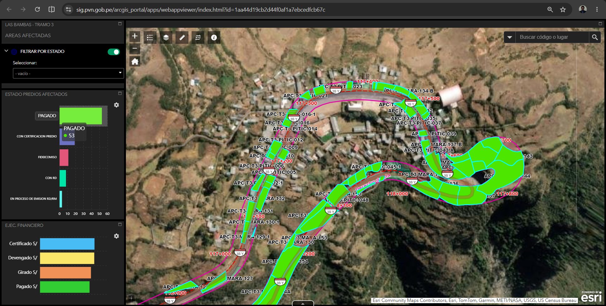

Visores Web GIS rápidos
Diseño de plantillas y flujos reutilizables para convertir productos geoespaciales en experiencias de consulta disponibles en menos tiempo.
Visores Web GIS · Drones RTK · Lima, Perú
Diseño experiencias geográficas rápidas para convertir ortofotos, modelos y capas de proyectos de drones en información accesible, visual y útil para equipos técnicos.

Especialista GIS con más de 15 años de experiencia en información territorial y proyectos de infraestructura vial. Combino conocimiento de campo, fotogrametría, gestión predial y desarrollo geoespacial.
Mi especialidad es estructurar visores Web GIS replicables para que los equipos puedan publicar ortofotos, modelos y capas temáticas con rapidez, consistencia cartográfica y una experiencia clara para el usuario.
Diseño de plantillas y flujos reutilizables para convertir productos geoespaciales en experiencias de consulta disponibles en menos tiempo.
Comprensión integral del vuelo: planificación, captura RTK, control terrestre, procesamiento y validación antes de publicar.
Integración de ortofotos, modelos, capas vectoriales y datos prediales con criterios de escala, rendimiento y lectura cartográfica.
Diseño de tableros que conectan la ubicación con indicadores técnicos, prediales y de avance para apoyar decisiones.
La ventaja no está solo en dominar una herramienta, sino en comprender cada transición del dato hasta llegar al visor.
Vuelo RTK, GNSS y control terrestre.
Datos de campoOrtofotos, modelos y control de calidad.
Productos validadosCapas, atributos, escalas y simbología.
Información estructuradaServicios, plantillas y visor Web GIS.
Experiencia disponibleProyectos públicos que muestran la capacidad para diseñar accesos, visores temáticos y tableros conectados con productos de drones e información predial.

01Abrir visorDiseño de experiencia + catálogo Web GIS


Extensión general del proyecto02Abrir visorOrtofoto + capas viales + consulta multiescala


Detalle de ortofoto y predios03Abrir visorVisor temático + navegación territorial


Cobertura completa del corredor04Abrir visorVuelo de alta montaña + publicación Web GIS

05Abrir visorDashboard GIS + indicadores prediales
Trayectoria pública y privada aplicada a infraestructura, gestión predial, catastro y soluciones geoespaciales.
Diseño de visores de campo, administración de información geoespacial, levantamientos con drones RTK y soluciones para proyectos viales.
Web GIS · Drone RTK · Infraestructura vialFotogrametría, ortomosaicos, modelos, CAD-GIS y productos técnicos para proyectos de infraestructura.
Fotogrametría · CAD-GIS · Gestión predialServicios de cartografía, georreferenciación, catastro, drones, Web GIS y análisis territorial.
Cartografía · Catastro · Soluciones geoespacialesBases gráficas, aplicativos GIS, automatización y control de calidad para infraestructura urbana.
Aplicativos GIS · Automatización · Calidad de datosArcGIS Enterprise · ArcGIS Online · Experience Builder · Web AppBuilder · servicios REST · publicación y administración de capas
Autel EVO II RTK · DJI Phantom 4 RTK · GNSS diferencial · fotogrametría · ortofotos · modelos · control terrestre
PHP · Laravel · Python · C# · ArcGIS Pro · geodatabases · PostgreSQL · SQL Server · Power BI